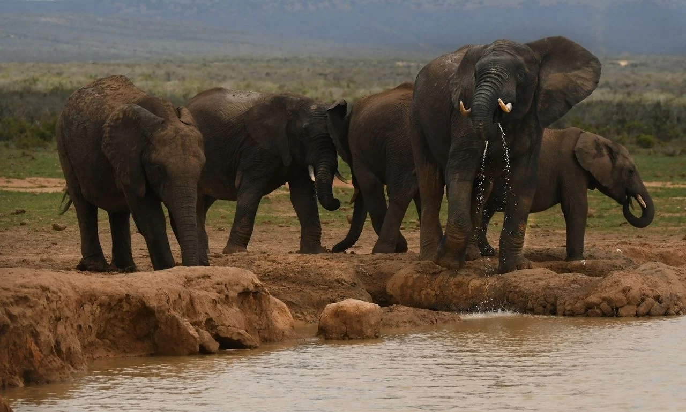

Belgesel Alt Kategorileri
İlginizi çeken konuyu seçerek ilgili belgesellerin tanıtımlarına geçin. Her ayrı yazıda yapımın konusu, anlattığı meselenin önemi ve IMDb izleyici puanı yer alır. Puanlar izleyici oylarının ortalamasıdır; zamanla değişebilir ve tek başına izleme önerisi sayılmaz.
Doğa & Çevre
Okyanusları, vahşi yaşamı ve farklı habitatları keşfedin; insan faaliyetlerinin ekosistemleri nasıl değiştirdiğini ve koruma çalışmalarının neleri mümkün kıldığını görün.
Doğa ve çevre belgesellerini keşfetSağlık & Yaşam
Gıda üretimi, reçeteli ilaçlar, hızlı moda ve tüketim alışkanlıkları üzerinden gündelik seçimlerimizin sağlıkla ve büyük endüstrilerle bağlantısını inceleyin.
Sağlık ve yaşam belgesellerini keşfetSiyaset & Toplum
Savaş, protesto, polislik ve finans sistemi üzerine yapımlarla gücün nasıl kullanıldığını, kararların kimleri etkilediğini ve toplumların nasıl değiştiğini sorgulayın.
Siyaset ve toplum belgesellerini keşfetBilim & Tarih
Evrenin ve yaşamın kökeninden yakın tarihe ve spor kültürüne uzanan anlatılarla keşiflerin, dönüm noktalarının ve insan hikâyelerinin izini sürün.
Bilim ve tarih belgesellerini keşfet